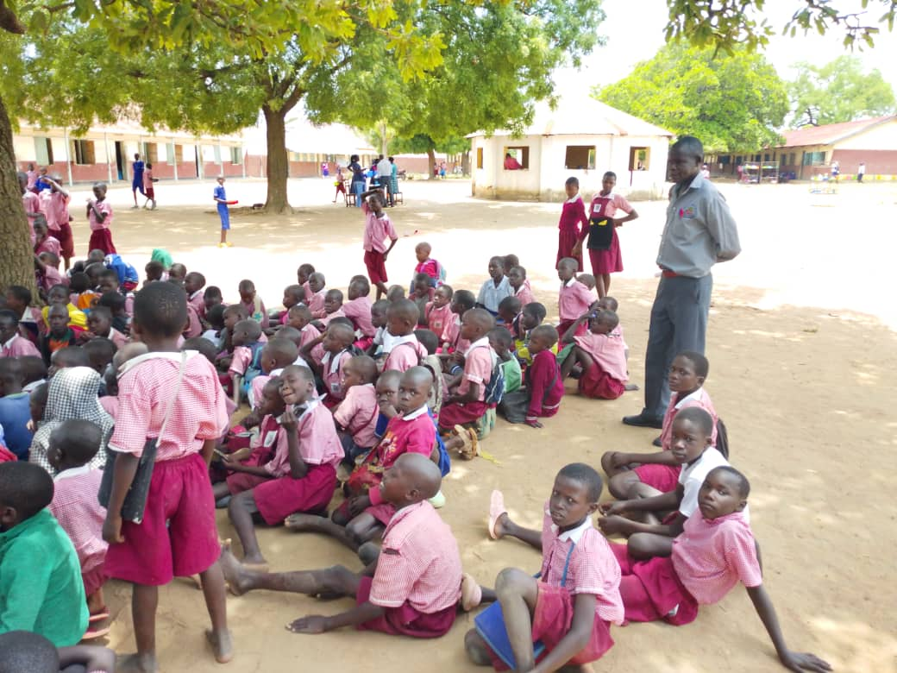
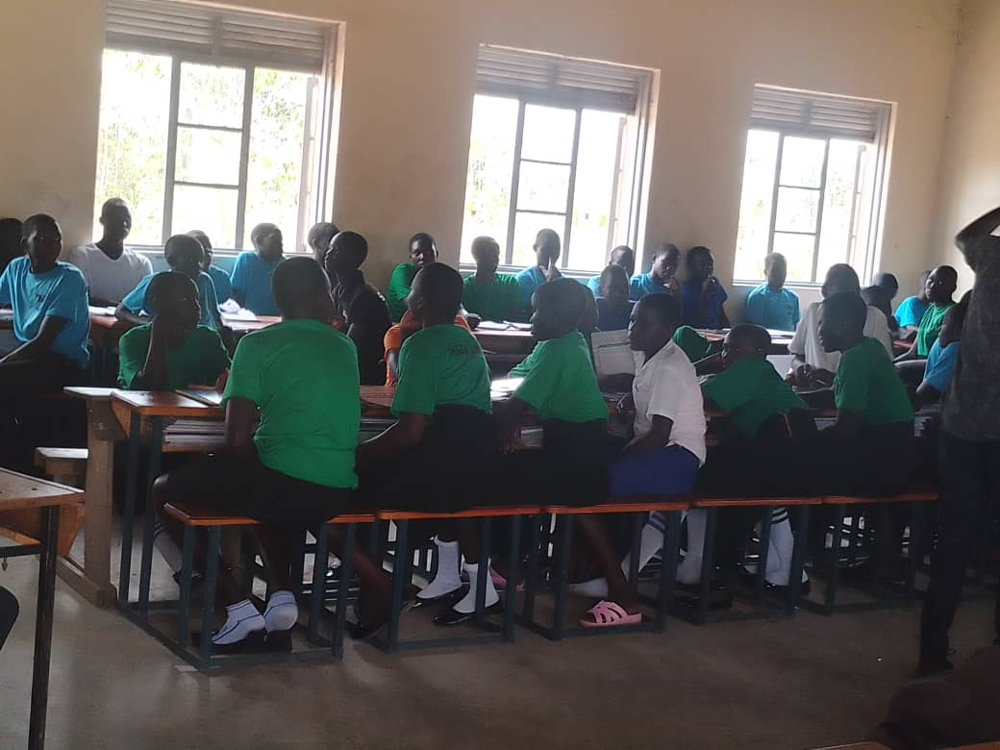
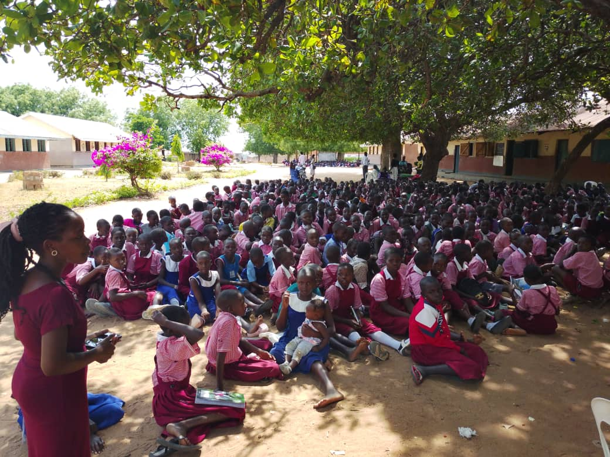

Six Pillars for Raising Holistic Leaders
Equipping vulnerable children with the essential skills, character, and vision required to excel in today's world.

At El-Shaddai Orphanage Foundation, we believe that breaking the cycle of generational poverty and trauma requires a comprehensive, foundational approach. It is our absolute commitment to expose every child under our care to six core competencies. These pillars ensure that when they emerge from our center, they do so not as dependents, but as resilient, capable, and self-reliant leaders ready to transform their communities.
1. Ethics and Integrity

Growing up in environments disrupted by family instability, domestic abuse, and neglect can significantly impact a child's moral development. We place an immense emphasis on building absolute transparency, honesty, and accountability. Our children learn the value of personal character, respect for property rights, and the importance of honoring external agreements and contracts. By encouraging continuous self-improvement and introducing measurable metrics for personal growth, we prepare our youth to become trustworthy citizens who naturally stand out from the crowd.
2. Spiritual Development

As a Christian faith-based non-profit organization, our mission is fundamentally guided by scriptural principles and spiritual mentorship. We follow the timeless wisdom of Proverbs 22:6 to train up children in the way they should go, ensuring a strong moral foundation that endures into adulthood. Grounded in our organizational motto, "Love God, Love people, Serve others," we encourage active involvement in fellowship, personal reflection, and character-building activities that reveal hope and promote deep healing from early childhood trauma.
3. Talent Development

Extreme poverty and social isolation often lead vulnerable children to feel overlooked or viewed as useless individuals within their communities. Our programs are designed to intentionally uncover, nurture, and celebrate the unique artistic, musical, creative, and athletic capabilities inherent in every child. Cultivating these gifts helps restore shattered self-esteem, rebuilds individual hope, and opens sustainable pathways toward future professional opportunities in creative fields.
4. Environmental Literacy
Health and sustainability are deeply interconnected, especially in rural regions facing resource scarcity. We proactively build community awareness and educate our children on vital environmental and health practices. This includes practical instruction on protecting local water sources, practicing advanced domestic home hygiene, and implementing proactive preventive health measures within schools. Through this literacy, our students learn to respect natural environments while actively safeguarding community public health.
5. Entrepreneurship

Without education or professional skills, orphans are frequently subjected to unfair wages and severe economic exploitation just to feed themselves. Our entrepreneurship framework counteracts this vulnerability by emphasizing self-reliance and socio-economic welfare. Children are introduced to practical vocational concepts, trade fundamentals, and real-world sustainable farming practices. By teaching them how to design, manage, and scale small enterprises, we grant them the practical tools necessary to secure long-term financial independence.
6. Information, Communication, and Technology (ICT)
The modern world operates on a digital landscape, yet rural communities in Eastern Uganda face severe technical gaps that amplify school dropout rates. Our ICT competency program actively bridges this divide. We are dedicated to developing modern computer facilities that equip our students with essential digital literacy, online communication skills, and data processing capabilities. Mastery of these technical skills ensures that our youth remain highly competitive and fully capable of stepping into strategic leadership roles in the global workforce.
A Vision of Hope
By blending these six core competencies with quality education, stable medical care, and consistent emotional support, we fulfill a mission inspired by a spirit of true service: not to be served, but to serve. Together, we are raising a whole new generation of holistic, values-driven leaders who will reshape the future of Uganda.